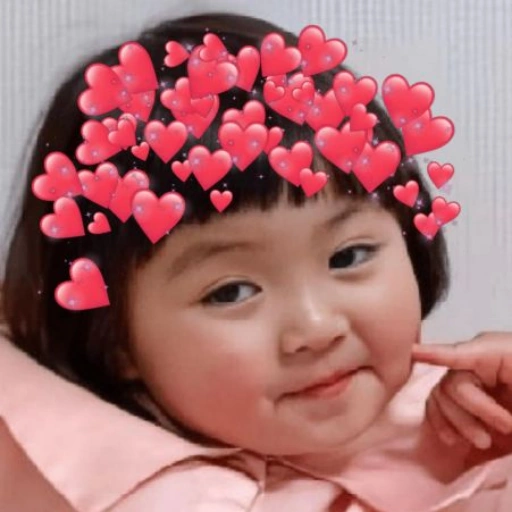
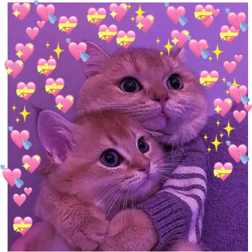
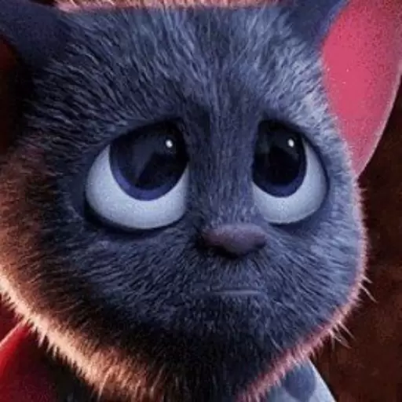
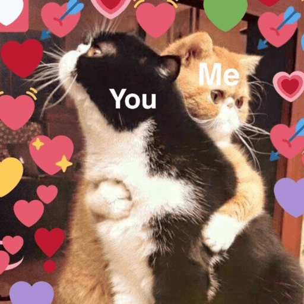
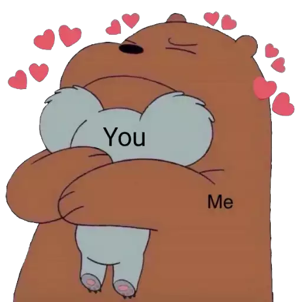
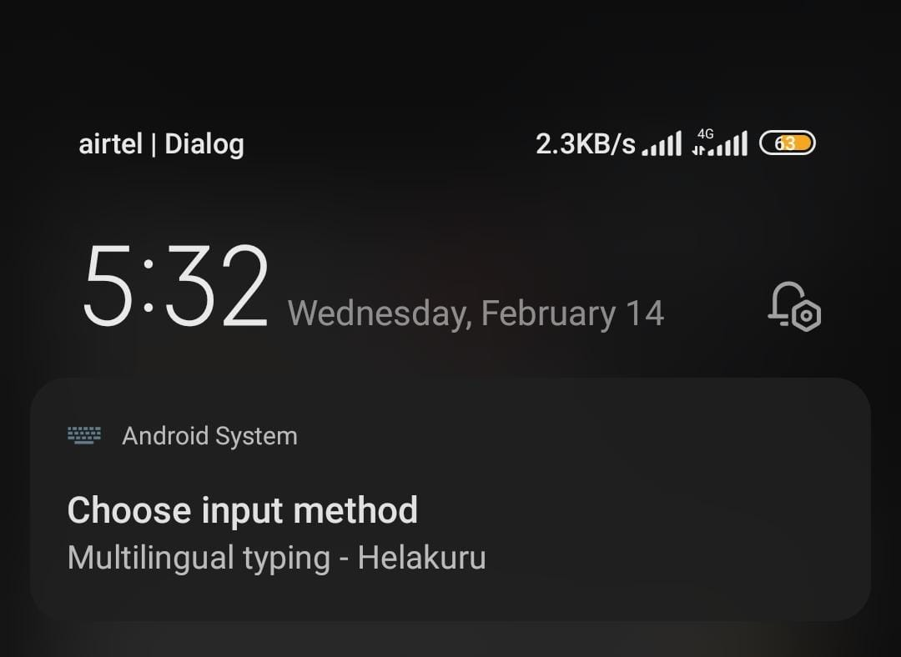
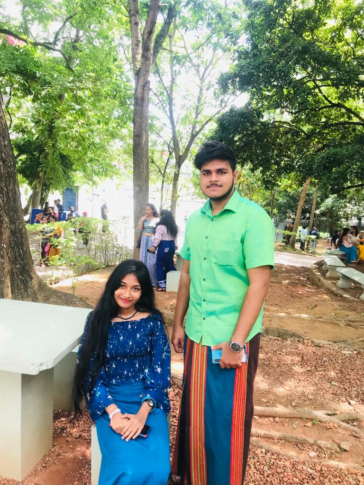

මගේ නංගි,
ඇත්තටම මට කොහෙන් පටන් අරං මොනව කියන්නද කියල හිතාගන්න බෑ.
අද 2024.02.14. දැන් වෙලාව පාන්දර 3.05 යි. වෙනද වගේම එලියට වෙලා අහස දිහා බලාගෙන ලියන්නෙ. 🌙 මේ වගේ හඳකුත් ලස්සනට පායලා තියෙනව. හරියට ඔයා වගේ.
දැන් මම ඔයාව අඳුරගෙන අවුරුදු එක හමාරකටත් ලඟයි. මට එච්චර ලේසියෙන් කෙනෙක්ව හිතට වදින්නෙ නෑ. මොකක් හරි හේතුවකට මට ඔයාව හිතට වැදුනා. ගොඩක් ෆිට් වුනා. ඔයා ඇත්තටම ගොඩක් හොඳ ගෑණු ලමයෙක්. ඔයා වගේ කිසිම කෙනෙක් මට මෙච්චර කාලෙකට හම්බෙලා නෑ.
ඔයත් එක්ක කතාකරද්දි මගේ හිතට පුදුම සැහැල්ලුවක් දැනෙනවා. ඒ පුංචි වෙලාවට මගේ ප්රශ්න ඔක්කොම අමතක වෙලාම යනවා. මම ඔයත් එක්ක කතාකරන්න පට්ටම ආසයි. අද වෙනකොට මගේ හොඳම යාළුවා ඔයා. කොච්චර යාළුවො හිටියත් මට ඔයා තරම් කිසිම කෙනෙක් දැනිලා නෑ. ඉතිං මගේ හොඳම යාළුවා ඔයා. මගේ නංගිත් ඔයා. මම පොඩි කාලෙ ඉඳල නංගි කෙනෙක්ට ගොඩක් ආසයි. ඒත් මට නංගිලා නෑනෙ. දැන් මට නංගි කෙනෙක් හම්බෙලා තියෙනව. ඉතිං මට පට්ට හැපී. මං මගේ නංගිට පට්ට ආදරෙයි. ❤️
ඔයාට මතකද ගිය මාසෙ 23 ඔයාගෙ අර ප්රශ්නෙ වුනු දවස. මමත් පිස්සෙක් වගේ කෝල් අරං ඔයාට වද දුන්නෙ ? දවසක් දෙකක් ඔයාගෙන් මොකුත් Response එකක් නැති වුනාම මට පට්ට අවුල්. එක එක විකාර හිතෙනව. වෙලාවකට බයයි තරහ වෙලාද කියල. තව වෙලාවකට හිතෙනව ඔයාට මොකක්හරි කරදරයක්ද කියල. මට ඉතිං පිස්සු වගේ. මට එතකොට කිසිම වැඩක් හරියට කරගන්න බෑ. ඒකයි එහෙම කෝල් ගත්තෙ. ඔයා නොකිවුවට ඔයාට ඒ ටිකේ මාත් එක්කත් කේන්ති යන්න ඇති. මම දන්නව. ඔයාගෙ පැත්තෙන් ඔයා සාධාරණයි. ඒත් ඉතිං මං ඒ මොකුත්ම දන්නෙ නෑ නෙ. මං මේ Website එකේ වැඩ පටන්ගත්තේත් ඒ දවස් වල.
ඒ දවස් වල මම ගොඩක් අහපු සිංදුවක් මට හිතට වැදුනා අදටත් ඒක ඇහෙනකොට මට මතක් වෙන්නෙ ඔයාව. 🥰❤️
සමහර වෙලාවට පැය ගනං ඔයාගෙන් Reply නැති වෙනකොට, දාලා තියෙන Msg දැක්කෙ නෑ වගේ ඉන්නකොට, Calls Answer කරන්නෙ නැති වෙනකොට, Call කරන්නං කියල Call ගන්නෙ නැතුව ඉන්නකොට මට හිතෙනව මට ඔයාව ගොඩක් වටින කෙනෙක් වුනාට ඔයාට මම ඔයාගෙ Contact List එකේ නිකංම නිකං Contact එකක් විතරයි ද කියල. 😔💔 තව වෙලාවකට හිතෙනව මම ඔයාට වදයක් වෙලා ඔයාට මාව එපාවෙලා ඇති කියල. මට තව ඔළුවට වද දෙන ලොකු ප්රශ්නයක් තියෙනවා. ඔයා Job එකට යන්නෙත් නැතුව, කැම්පස් යන්නෙත් නැතුව ගෙදර ඉන්න දවස් වලටත් ඔයා ඔච්චර Busy ඇයි කියල. 🥺 දන්නවද තව දෙයක් ? ඔයා ගන්නං කියල අතර මැද Cut කරන හැම Call එකක්ම ඔයා ආයෙ ගනියි කියල මම බලාගෙන හිටියා. අදටත් එහෙමයි. එහෙම නැති වෙනකොට ගොඩක් රිදෙනව ඉතිං. ඒත් ඉතිං මම මොනව කරන්න ද ඒකට. 🥺 සමහර දවස් වලට ඔයාගෙ Voice එක ඇහුනෙ නැති වුනාම නින්ද යන්නෙත් නෑ. උබ නං පිස්සුවක් මගේ නංගි. සමහරවිට ඔයාට මේව කියවද්දි හිතෙනව ඇති මොන මල විකාරයක්ද මේ කියල. ඒත් මේ ඔක්කොම ඇත්ත. මට මේ දේවල් ටික ඔයාට කියල හිත නිදහස් කරගන්න ඕනි මගේ නංගි. 😔 මේ දේවල් ඔළුවෙ තියාගෙන මම පට්ට Pressure එකක ඉන්නෙ. 😔 මට මේව කියාගන්න වත් වෙලාවක් ලැබුනෙ නෑ අද වෙනකං. පුළුවන් නං විතරක් මීට පස්සේ වත් Call එකක් Cut කරනකොට හරි Good Bye එකක් දෙන්න.
[1/18, 9:06 PM] Nethmi Nanga 🥰: Oyata mokakda aiye mea wela tyenne
මං දන්නෙත් නෑ මට මොනව වෙලාද කියල.
[1/18, 9:06 PM] Nethmi Nanga 🥰: Oya issara lakindu aiya nme
හ්ම්ම් මටත් තේරෙනව කලින් හිටපු ලකිඳු අයියා නෙවෙයි කියල. කලින් මම මෙහෙම නෑ. කිසිම දෙයක් Serious ගත්තෙ නැති පට්ට ආතල් එකේ හිටපු කෙනෙක් මම. ඒක නිසා වෙන්න ඇති ඔයාටත් මම වෙනස් වෙලා වගේ දැනෙනව ඇත්තෙ. එහෙම වෙන්න හේතුවක් නං මට අදටත් හිතාගන්න බෑ.
මතකද කැම්පස් පටන්ගත්තු දවස. 5 වෙනිදා. මම ගොඩක් අවුලෙන් හිටියේ ඔයාගෙන් Calls නෑ. Msg seen කරන්නෙත් නෑ. මට දැනෙන්නේ මගාරිනව වගේ. ඔයාගෙ ප්රශ්න මොකුත් මම දැනගෙන හිටියේත් නෑ. මම ගොඩක් ආසාවෙන් බලාගෙන හිටියේ කැම්පස් පටන්ගන්නකං ඔයාව Meet වෙලාම කතාකරන්න.
[2/5, 4:04 PM] Nethmi Nanga 🥰: Ane aiye oya ai enne
එන්නෙ කතාකරන්න 😒
[2/5, 4:05 PM] Nethmi Nanga 🥰: Call ekak gnm gedara gihin
ගත්තෙ නෑ නෙ 😒
[2/5, 4:05 PM] Nethmi Nanga 🥰: Oya boruwata enna epa
බොරුවට නං නෙවෙයි ඉතිං 😒
[2/5, 4:06 PM] Nethmi Nanga 🥰: Enna epa
එන්න Pickme එකකුත් දාලා Cancel කරා.😒
එදා මං කොහොම හරි meet වෙනව කියල හිතාගෙන හිටියේ. අම්මෝ ඒ Pressure එක නං කියාගන්න වචන නෑ.
[2/5, 4:06 PM] Nethmi Nanga 🥰: Kiyanna tyana deyak call walin kiyanna
Answer කරන්න එපැයි කියන්න 😒
[2/5, 4:06 PM] Nethmi Nanga 🥰: Mokakda aiye oyata ocharatama kiyanna tyenne
කොච්චර දේවල් තියෙනව ද 😒
[2/5, 4:07 PM] Nethmi Nanga 🥰: Mokakda kiyanna tyenne kiyannako
කියන්න කෝල් එකක් ගන්න එපැයි
[2/5, 4:08 PM] Nethmi Nanga 🥰: Itin kiyanna
[2/5, 5:01 PM] Nethmi Nanga 🥰: Oyata mokakda wela tyenne kiyannako mulinma
පිස්සු විතරයි හැදිල හිටියේ නැත්තේ 😒
[2/5, 5:12 PM] Nethmi Nanga 🥰: Nh nh ehema mukuth nh
[2/5, 5:12 PM] Nethmi Nanga 🥰: Methana prashnekuth nh aiye
[2/5, 5:12 PM] Nethmi Nanga 🥰: Oya hithin mawagena
හිතින් මවාගන්නෙ නැතුව වෙන මොනව කරන්නද මං 😒
[2/5, 5:24 PM] Nethmi Nanga 🥰: Nh
[2/5, 9:04 PM] Nethmi Nanga 🥰: Ane aiye please tyana prashna madiwata oyath ohe karanna epa ane
කවදාවත් ඔයාට ප්රශ්න ඇති කරන්නෙ නං නෑ ප්රොමිස් 😇
[2/5, 9:04 PM] Nethmi Nanga 🥰: Hari mn boru karaya dn dannawane
අනේ එච්චරයි හිතල කිව්වෙ නෑ ලමයෝ මම ඒක 😔
[2/5, 9:05 PM] Nethmi Nanga 🥰: Boru karayo ekka katha karanna epa echarai
මේ මෙසේජ් එකට නං රිදුනා හොඳේ 😒💔
අම්මෝ ඉතිං මෙයත් එක්ක කතාකරන්න මම කාපු කට්ටක්.😁 පස්සේ දවසෙ කැම්පස් එකේ බලාගෙන ඉන්නව මං මෙයා නෑ. එදා ලෙක්චර් හෝල් එකෙන් එලියට ආවෙත් නෑ.
මෙසේජ් වලට රිප්ලයිත් නෑ. Calls answer කරන්නේත් නෑ. බැරිම තැන යාළුවෙක්ගෙ එකකින් ගත්ත. මම නං හිතුවෙම නෑ ඒක Answer කරයි කියල. අම්මෝ කාලෙකට පස්සේ බලාගෙන හිටපු වොයිස් එක ඇහෙනකොට දැනෙන සතුට. ඒත් ඔයාගෙ ප්රශ්නෙ කියල අඬනකොට නං එදා මටත් ඇඬුනා. 💔
ඔයා ඔය ප්රශ්නෙ මට කලින්ම කියල තිබුන නං ?
මගේ නංගි බබෝ මීට පස්සේ එහෙම ඔය වගේ ප්රශ්න හංගන්න එපා ඕනිම දෙයක් කියන්න. මම ඔයාට Help කරන්නං පුළුවන් විදියට. ඔයාට ඕනිම දේකට මේ අයියා ඉන්නවා. ❤️
ඔයාට මතකද එදා සඳුදා හවස 4.12ට මම කෝල් එකක් ගන්නෙත් නැතුව ඔයාම මට කෝල් එකක් ගත්තා. අම්මෝ එදා නං මට පට්ටම Happy. මට ඒක වචනෙන් කියන්න තේරෙන්නෙ නෑ. 😊❤️
දැන් ඇති නේද අයියගෙ පිස්සු විකාර කතා ඇහුවා ?😄
ඉතිං පුංචි ලස්සන ගෑනු ලමයෝ ඔයාට ඔයාට සුභම සුභ Happy Birthday එකක් වෙන්න ඕනි ! 🎂
ඔයාගෙ ඔය මං ආසම ,ලස්සනම ලස්සන චීස් හිනාව හැමදාම තියාගෙන හැමදාම සතුටින් ඉන්න ඕනි ඔයා ! 😊
මොන ප්රශ්නෙ ආවත් කිසිම දේකට සැලෙන්නෙ නැතුව හැමදේටම හොඳට Face කරන්න ඕනි ! 💪
ඔයාට කවදාවත් වරදින්නෙ නෑ ඔයාගෙ හිත පට්ට හොඳයි ! ❤️
ඔයාට ඕනිම වෙලාවක, ඕනිම දේකට, ඕනිම Help එකක් දෙන්න මම ඔයාගෙ ලඟින්ම ඉන්නවා. කිසිම දේකට බය වෙන්න එපා.
මගේ හොඳම යාළුවා, එකම නංගි උබ වෙනකොට මට උබ වෙනුවෙන් මැරෙන්න වුනත් පුළුවන්. මං උබට පට්ට ආදරෙයි. මට ඒක කියාගන්න වෙන විදියක් තේරෙන්නෙ නෑ. ❤️
ආහ් මං ඔයාට අලුත් නමක් දැම්මා. Valentine Princess 🥰. අවුලක් නෑ ඒකත් මරු.
Website එක ගැන කියනව නං මට ඕනි වුනෙ ඔයා වෙනුවෙන් මීට කලින් කවුරුවත්ම කරල නැති වැඩක් කරලා චූටි Surprise එකකතුත් එක්ක ඔයාගෙ මූනට ලස්සන හිනාවක් ගේන්න. 😊 මට තව එක බයක් තියෙනව ඔයා් මේකට කැමති වෙයිද දන්නෑ කියල. මම උපරිම Try කරනව දන්න වැඩ කෑලි ඔක්කොම දාලා ඔයාට ලස්සන දෙයක් දෙන්න. ❤️😊
මට මේක හදද්දි ඔයාගෙ Choices ගැන දැනගන්න ඔයාගෙන් අහන්න ප්රශ්න ගොඩාක් තිබුනා. ඒව ඉතිං එක පාර අහන්න බෑනෙ. ශේප් එකේ දැනගන්න එපැයි. 😏 ඒත් ඒ මොකුත් හරියට කරගන්න බැරි වුනා. හැමදාම ඒ ප්රශ්න මතක් වෙනකොටම මේ ලමයා Call එක Cut කරල දුවනවනෙ. 😒 ඉතිං අන්තිම වෙලාවෙ මට ඔයා ආසම පාට විතරයි අහගන්න පුළුවන් වුනෙ.
මම මේක ගොඩක් Plan කරා. මං දන්නෑ ඒක කොච්චර දුරට Success වෙයිද කියල නං. ඔයාට ඒක බලනකොට දැනුනු Experience එක ගැනත් Comment එකක් ඕනි. එතකොට මටත් මේ වැඩේ ගැන Satisfaction එකක් එයි. 😊 මේ වෙනකොටත් ඒකෙ වැඩ ඉවර නෑ තව හදන්න තියෙනව අපි බලමුකො ඒක. දැන් නිදාගෙන ආයෙ නැගිටල ඒක හදන්න පටන්ගන්න ඕනි. මට මේ Mission එක Complete කරන්න තව පැය කීපයයිනෙ තියෙන්නෙ.😁 අම්මෝ ඊටපස්සෙ නං මට හොඳට නින්ද යයි. ඔයාට මේ Letter එකත් එච්චර ලේසියෙන් හොයාගන්න නං වෙන්නෙ නෑ ඔයාට Challenge එකක් තියෙන්නෙ. ආහ් තව එකක් මේක කියවල ඉවර වෙලා මට කියන්න.
තව මම මේක ඔයාට දෙන්න ඉන්නෙ අද රෑ 12ට. ඔයාට ඉස්සෙල්ලාම Wish කරන්නත් මම හිතාගෙන ඉන්නවා. දෙයියන්ගෙන් තමයි ඉල්ලන්න වෙන්නේ අනේ ඔයා ඒ Call එක නං Cut කරන්න එපා කියල. 🥺 ඔයා අද කලින් නිදාගන්න එකක් නෑ කියල මම හිතාගෙන ඉන්නව. 🥺
මගේ Plan එකේ විදියට වැඩේ කරගන්න බැරි වුනොත් මේකෙ වටිනාකම අඩු වෙනව. 🥺💔
ඔයාගෙන් මම Cake ඉල්ලුවෙ මම මාස ගානකින් ඔයාව දැකල නෑ. 🥺💔 ඔයාව බලන්න ගොඩක් ආසාවෙන් ඉන්නෙ මම. 🥺 තව ඔයාට දෙන්න පුංචි පුංචි ගිෆ්ට් ටිකක් ගත්තා ඒක දෙන්නත් ඕනි හරි වෙලාවට. ලොකු දෙයක් නං දෙන්න බැරි වෙයි. පස්සේ වෙලාවක ලොකු ගිෆ්ට් එකක් දෙන්නංකො අයියා. 😊❤️ තව ඔයත් එක්ක මට Selfie එකක් ගන්නත් ඕනි. මම නං හිතන්නෙම නෑ මට එදාට ඕක මතක් වෙයි කියල.
ආහ් තව දෙයක්. ඔයාගෙ IT Modules ටික මම ගොඩ දාලා දෙන්නං. මගේ ලඟ ඒකටත් පොඩි Plan එකක් තියෙනව. ඔයාටත් ටිකක් මහන්සි වෙන්න වෙනව ලමයෝ. හැබැයි මම ඉන්නව මගේ නංගිත් එක්කම ඕනිම දේකට ඕනිම වෙලාවක. මගේ නංගි ඉස්සරහටම යනව බලන්න තමයි මේ අයියට ඕනි. ඒ වෙනුවෙන් මම ඕනිම දෙයක් කරනවා. ❤️
අම්මෝ එලිවීගෙනත් එනව, කුකුල්ලුත් කෑගහනව. 😂 දැන් වේලාව උදේ 5.32යි. මේ ශ්රී ලංකා ගුවන් විදුලි සංස්ථාවයි. 😂
අම්මෝ ඉතිං කියන්න නං ගොඩාක් දේවල් තියෙනවා හිතේ පස්සේ වෙලාවක කියන්නංකො. දැන් මට හිතාගන්න බෑ කියන්න ඕනි මොනවද කියන්න ඕනි නැත්තෙ මොනවද කියල. මේ වචන ටික ගලප ගත්තෙත් හෙනම ගේමක් දීලා. 😂 කියන්න තියෙන දේවල් වලින් 1%ක් වත් මේකෙ ලියල නැතුව ඇති. ලියපු එකෙත් අඩුපාඩු ඇති ගොඩාක්. මම එච්චර ලියන්න දක්ෂ නෑ නෙ නංගියෝ. Letter එකක් අන්තිමට ලිවුවෙ Grade 10 වලදි. සොරි වෙන්න ඕනි ඒකට. 😂
අනේ මේකෙ වැරදි මොනවහරි තිබුන නං මට සමාවෙන්න. 😔 මේක කියවලා ඔයා ආයෙ මාත් එක්ක කතාකරන එකක්වත් නෑ කියල ලොකු බයකුත් තියෙනවා. 😔 අනේ දෙයියනේ එහෙම නං වෙන්න එපා එහෙම වුනොත් මට මොනව වෙයිද දන්නෑ. 🥺🙏 කියවල ඉවර වෙලා Call එකක් ගන්න මට. මේකෙ තියෙන දේවල් ගැන ඔයාට මොනව හරි මාත් එක්ක කතාකරන්න, අහන්න, කියන්න තියෙනව නං ඒ ඕනි දෙයක් මට කියන්න. ඔයාට මට කියන්න බැරි දෙයක් නෑ මගේ නංගි.
ඉතිං මගේ නංගි මම නවතිනවා. බුදුසරණයි. හැමදාම සතුටින් පරිස්සමෙන් ඉන්න. ගොඩාක් ආදරෙයි මම මගේ නංගි බබාට. 😘❤️
ඔයාගෙම අයියා. ❤️
